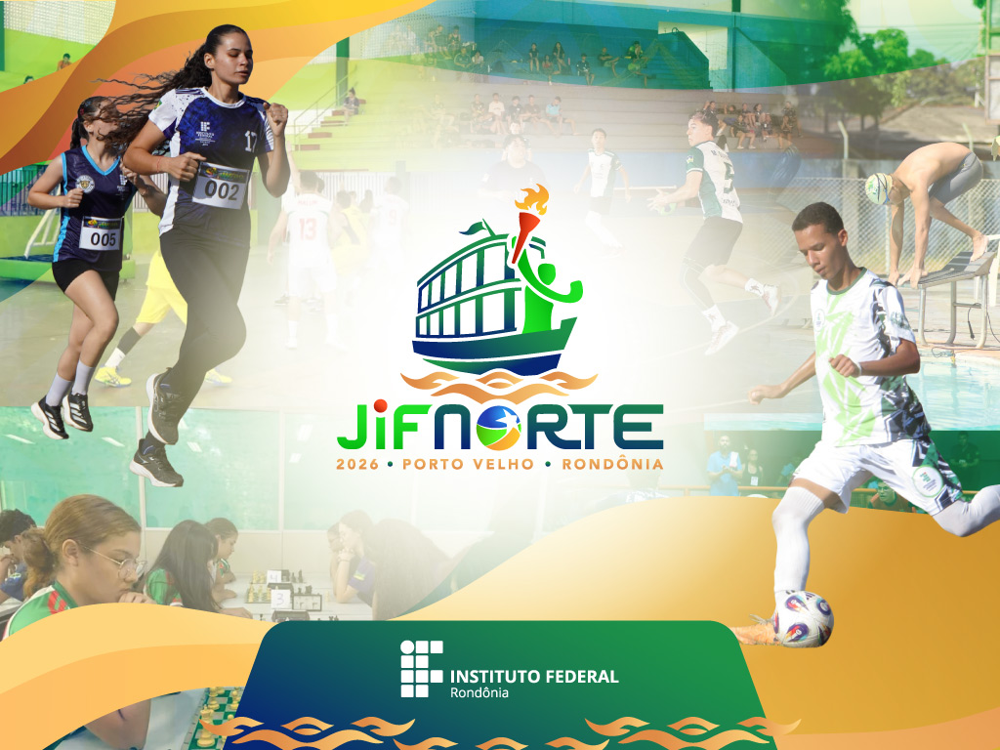
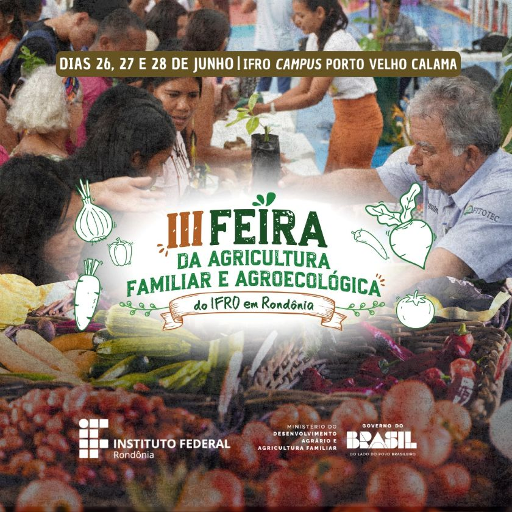

O Instituto Federal de Educação, Ciência e Tecnologia de Rondônia (IFRO), Campus Porto Velho Zona Norte, está com inscrições abertas para seleção de colaboradores bolsistas que atuarão nos cursos de Pós-Graduação Lato Sensu em Gestão em Educação a Distância e em Segurança da Informação, ofertados na modalidade a distância, por meio do Sistema Universidade Aberta do Brasil (UAB).Saiba mais

Vem aí os Jogos dos Institutos Federais Etapa Norte, o JIF NORTE 2026! Após 11 anos, o Instituto Federal de Educação, Ciência e Tecnologia de Rondônia (IFRO) será mais uma vez o anfitrião do evento que reunirá centenas de estudantes-atletas dos sete estados da região. Os jogos vão ocorrer no período de 31 de agosto a 4 de setembro, em Porto Velho-RO.Saiba mais

O Instituto Federal de Educação, Ciência e Tecnologia de Rondônia (IFRO) realizará, entre os dias 26 e 28 de junho, a III Feira da Agricultura Familiar e Agroecológica, no Campus Porto Velho Calama. Com entrada gratuita e aberta ao público, o evento tem como objetivo valorizar os produtores rurais, fortalecer a agricultura familiar e incentivar práticas sustentáveis, promovendo a integração entre saberes tradicionais, conhecimento científico e a comunidade.Saiba mais